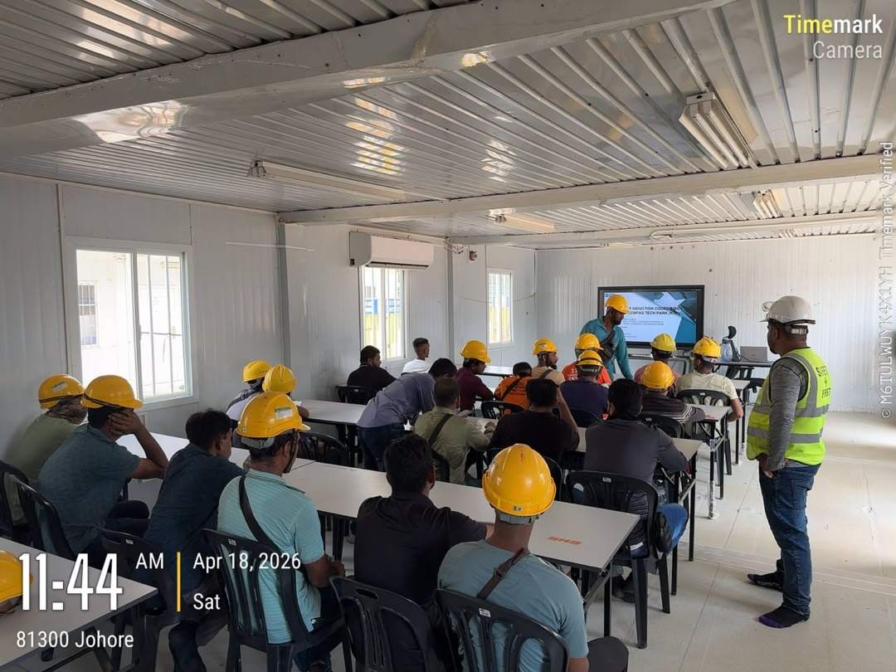
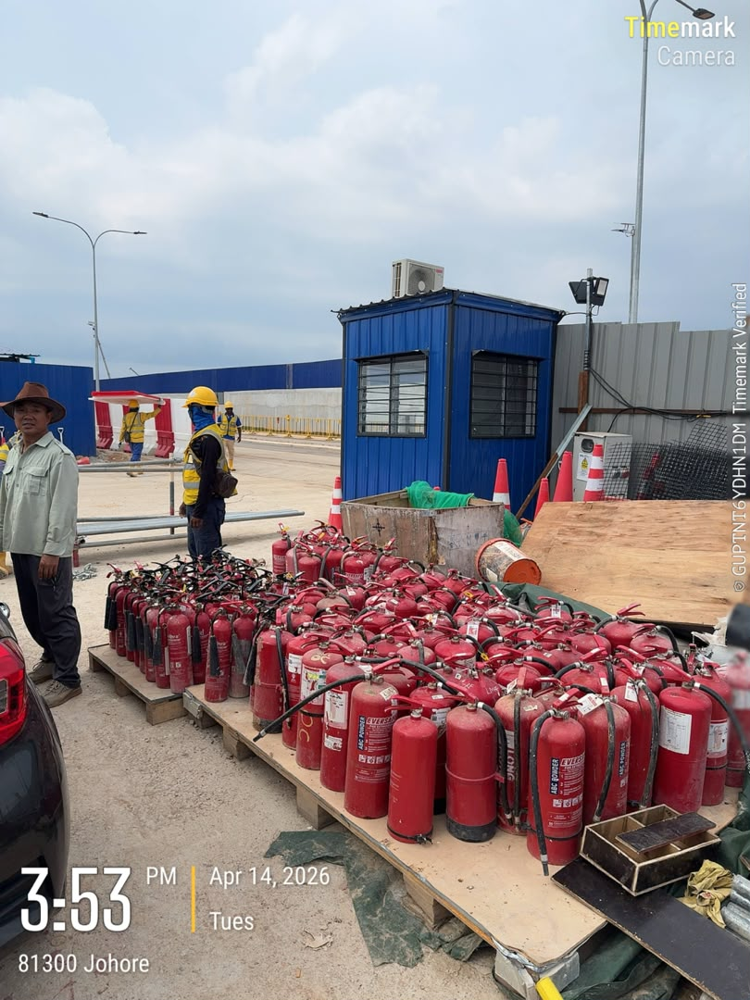

Site responsibilities
Building the foundations.
I began learning the induction process while taking responsibility for warehouse organisation and coordinating the collection of fire extinguishers for servicing.

Induction learning

Servicing coordination